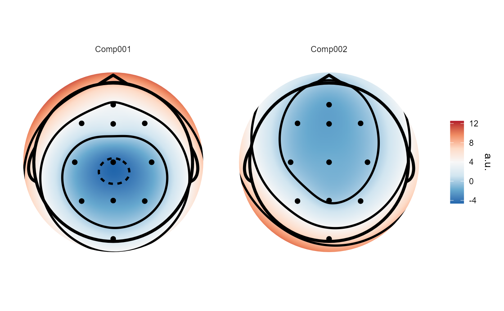

Performs Independent Component Analysis for electroencephalographic data.
Currently only available with on epoched data. Implements three different
methods of ICA - 'fastica', 'extended Infomax', and 'Second-Order Blind
Identification (SOBI)'. The resulting eeg_ICA objects can be used largely
like eeg_epochs objects.
Data to be ICAed.
Other parameters passed to function.
"sobi" (default), "fastica", "infomax", or "imax". "infomax"
uses the implementation from the ica package, whereas imax uses the
implementation from the infomax package, which is based on the EEGLAB
implementation.
Maximum number of iterations of the Infomax and Fastica ICA algorithms.
Convergence tolerance for fastica and infomax. Defaults to 1e-06.
Reduce the number of dimensions using PCA before running ICA. Numeric, >1 and < number of channels
Defaults to TRUE. Centre the data on zero by subtracting the column mean. See notes on usage.
Use "gradient descent" or "newton" algorithm for extended infomax. Defaults to "gradient". Ignored if method != "infomax".
Annealing rate for extended infomax. Ignored if method != "infomax".
Learning rate for extended infomax. Ignored if method != "infomax".
Print informative messages to console.
"full" or "weights". "full" returns the mixing and unmixing matrices and the source timecourses. "weights" returns only the mixing and unmixing matrices. Defaults to "full".
An eeg_ICA object containing an ICA decomposition
eeg_epochs: Run ICA on an eeg_epochs object
It is recommended to mean-centre your data appropriately before running
ICA. The implementations of FASTICA and extended-Infomax from the ica
package, and of SOBI ICA have this as an option which is enabled by
default, while the implementation of FASTICA in the fICA package enforces
mean-centring of the columns of the data. With epoched data, it is
recommended to centre each epoch on zero, rather than centre on the overall
channel mean. This can be achieved with the rm_baseline() function. SOBI
ICA will do this automatically, whereas the other ICA implementations will
centre on the channel means, not the epoch means.
In addition, PCA will be required if the data is not full rank. This is typical when using average reference, when the data rank will be n_electrodes - 1.
Other decompositions:
eeg_decompose()
sobi_demo <-
run_ICA(demo_epochs,
pca = 10)
#> Reducing data to 10 dimensions using PCA.
#> Running SOBI ICA.
#> Setting tolerance to 0.0011
sobi_demo
#> Epoched ICA decomposition
#>
#> Number of components : 10
#> Number of epochs : 80
#> Epoch limits : -0.197 - 0.451 seconds
#> Sampling rate : 128 Hz
# We can plot the resulting spatial filters using `topoplot()`
topoplot(sobi_demo, 1:2)
#> Using electrode locations from data.
#> Plotting head r 95 mm

if (FALSE) view_ica(sobi_demo)